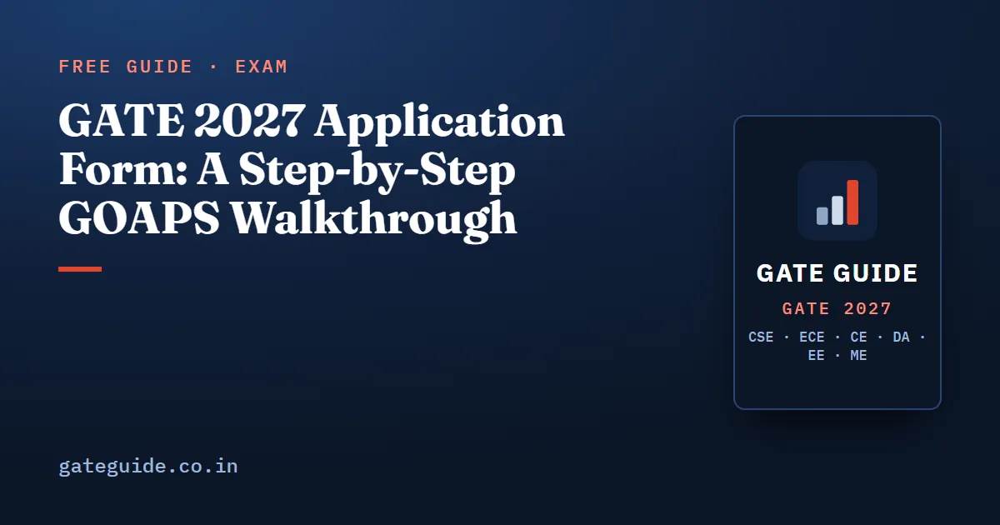

GATE 2027 Application Form: A Step-by-Step GOAPS Walkthrough

If you are searching for the GATE 2027 registration last date or the GATE 2027 login page, here is the short answer. As checked on the official site on 10 October 2026, regular registration has closed and the late-fee window is open until 12 October 2026. This guide walks you through the GATE 2027 application form on GOAPS, one screen at a time, and then tells you what happens after you pay.
In this guide
- Key takeaways
- The words you will meet on the form
- The dates that decide your window
- What to keep ready before you open the portal
- Photo and signature: the exact specifications
- The GATE 2027 application form, screen by screen
- Paying the fee without losing it
- After you submit: scrutiny, rectification and the admit card
- Quick revision
Key takeaways
- The GATE 2027 application form is filled online only, on GOAPS, which is linked from gate2027.iitm.ac.in.
- On 10 October 2026, the late-fee window was open until 12 October 2026; regular registration closed on 5 October 2026.
- After registration you receive an Enrolment ID by email, and you log in with it and your password.
- The photo and signature have exact pixel, size and shape limits; a photo that breaks them can get the form rejected.
- You choose three exam cities, all from the zone of your first choice.
- Once you click Submit and Proceed to Payment, you cannot edit the form. Defects are fixed in the rectification window, listed as 14 to 21 October 2026.
The words you will meet on the form
Five terms appear again and again. Learn them once and every screen becomes easier.
- GOAPS is the GATE Online Application Processing System. You register, fill the form, pay, download the admit card and see your result on it.
- The Enrolment ID is the unique number sent to your email after registration. You quote it in every message to the GATE office.
- A verified DigiLocker account is one whose profile is verified through e-KYC. Simply creating a DigiLocker account does not make it verified.
- Live facial capture is a photo of your face taken by your camera during registration. It is separate from the photo file you upload.
- Rectification is the window in which you correct defects that the scrutiny team marks in your form.
The official guideline page lets you register through an unverified DigiLocker account too. In that case your documents are checked after the deadline, and the originals are verified at the exam hall. The site recommends a verified account for a smoother exam day.
The dates that decide your window
These dates come from the official important dates page, read on 10 October 2026. The page itself says all dates are liable to change, and the closing dates have already been extended twice.
| Event | Official date |
|---|---|
| GOAPS opened | 2 September 2026 |
| Regular registration closed (no late fee) | 5 October 2026 |
| Late-fee registration closes | 12 October 2026 |
| Application rectification | 14 to 21 October 2026 |
| Exam city allotment notification | 4 January 2027 |
| Admit card download | To be announced |
| Exams | 6–7, 13–14 and 20–21 February 2027 |
| Results | 19 March 2027 |
The full calendar, with what to do in each gap, is in GATE 2027 exam dates.
Remember: If you read this after 12 October 2026, the registration window as published has closed. Check the official site for any further notice before assuming either way.
What to keep ready before you open the portal
GOAPS lets you save a half-filled form and come back, but it goes faster with everything ready. The brochure asks for:
- A personal email address and mobile number. One email can submit only one application, and neither can be changed later.
- A verified DigiLocker account, if you are an Indian national.
- Your name and date of birth exactly as printed on the photo ID you will carry to the centre.
- Address with PIN code, degree details, and your college name and address with PIN code.
- A recent photo, not older than three months, and a scanned signature.
- A scan of your photo ID. Accepted IDs include Aadhaar, Aadhaar Virtual ID, passport, PAN, voter ID and driving licence.
- SC, ST, PwD or dyslexia certificates in PDF, if they apply to you.
- A computer with a webcam or a phone with a 5 MP camera, in a well-lit room, for the live capture.
Photo and signature: the exact specifications
This is where most forms go wrong. A pixel resolution is width by height in pixels. An aspect ratio here is width divided by height.
| Item | Format | Largest file | Pixels (min to max) | Shape rule |
|---|---|---|---|---|
| Photo | JPEG or JPG | 600 kB | 200 × 260 to 530 × 690 | aspect ratio 0.66 to 0.89 |
| Signature | JPEG or JPG | 300 kB | 250 × 80 to 580 × 180 | width is 2.75 to 3.75 times the height |
The photo must be in colour, on a white background, with the face looking straight at the camera. After cropping, the face should fill 60 to 70 percent of the image. The signature must be in black or dark blue ink and fill 70 to 80 percent of its image.
A worked check
Say your cropped photo is 413 × 531 pixels. Divide width by height:
That lies between 0.66 and 0.89, and both sides lie inside the pixel limits, so the shape passes. A photo of 600 × 700 pixels has a fine ratio of about 0.86, but its width is above 530, so it fails.
Now a signature of 500 × 150 pixels. Its width is times its height, inside 2.75 to 3.75. A signature of 600 × 150 gives a ratio of 4.0 and is also wider than 580, so it fails twice.
Trap: The brochure rejects a signature written in all capital letters, initials only, or a digital signature. It also rejects a photo with glare on spectacles. These are defects, not style choices.
The GATE 2027 application form, screen by screen
Here is the order the form follows, from the official guideline page and section 6.4 of the brochure.
- Open the guideline page on gate2027.iitm.ac.in and read the instructions. The portal button leads to GOAPS.
- Register. Indian nationals go through DigiLocker; foreign nationals use the separate link and must bring their passport to the exam.
- Complete the live facial capture with your camera.
- Note the Enrolment ID that arrives by email. You log in with it and your password from now on.
- Fill your personal details. Write your name exactly as on your photo ID, with no prefix such as Mr., Dr. or Smt. The scorecard is issued in this name.
- Enter your degree and college details.
- Choose one paper, or two from the allowed combinations.
- Choose three exam cities.
- Upload the photo, signature, photo ID and any certificates.
- Click Save and View Application, and read every line.
- Click Submit and Proceed to Payment. After this click, no changes are possible.
- Pay the fee, then download the PDF of your submitted form.
Choosing papers and cities
You may take one paper or two, but two papers must be one of the combinations listed in Table 4 of the brochure. The fee for two papers is twice that of one.
The brochure allows three city choices, all from the same zone. Your first choice fixes your zone, and the GATE office of that zone handles your queries. The official FAQ says you will most likely get a centre in your first-choice city. The committee may still allot another city for operational reasons.
Paying the fee without losing it
Payment is online only: UPI, debit card, credit card, wallet or internet banking. Turn on e-commerce transactions on your card before you start. The fee table, with every category, is in the GATE 2027 registration and fee guide.
In the late-fee window, one paper costs ₹1,500 for female, SC, ST and PwD candidates and ₹2,500 for everyone else. A second paper doubles the amount.
If the money leaves your account but GOAPS shows no payment, the brochure tells you to start a fresh payment at once. A debited amount without acknowledgement, or a duplicate payment, returns to the same bank account within 15 working days. The fee itself is non-refundable.
After you submit: scrutiny, rectification and the admit card
Your form now goes through scrutiny. The GATE office checks your data against your documents and the clarity of your photo and signature. Its status shows on GOAPS as received, under scrutiny, accepted or defective.
If a defect is marked, you are told by email or SMS/WhatsApp. You fix it in the rectification window, listed as 14 to 21 October 2026. The official FAQ says a change of paper or exam city is entertained against an additional payment. The brochure does not print that amount, so read it on the portal when the window opens.
Two more rules from the official site. Do not delete your DigiLocker account after applying, because GATE will communicate through it. And keep your login safe: you will need it again for the admit card, whose download date is still to be announced. What to carry on exam day is covered in GATE 2027 admit card and exam day rules.
In one line: Fill once, check once, pay once, then watch GOAPS for a defect notice until the rectification window closes.
The form is the easy part. The paper itself, with its MCQ, MSQ and NAT questions, follows one marking scheme for every branch, explained in the GATE exam pattern and marking scheme (written for CSE, but the marking is common to all papers). Each of the six GATE 2027 books has 10 full mock tests, so you can practise on that scheme before February.
Quick revision
- The application runs on GOAPS, linked from gate2027.iitm.ac.in; log in with your Enrolment ID and password.
- As checked on 10 October 2026, the late-fee window closes on 12 October 2026. Confirm on the official site.
- Write your name exactly as on the photo ID you will carry, without any prefix.
- Photo: JPEG, at most 600 kB, 200 × 260 to 530 × 690 pixels, ratio 0.66 to 0.89, white background.
- Signature: JPEG, at most 300 kB, 250 × 80 to 580 × 180 pixels, black or dark blue ink.
- Choose three cities from one zone; your first choice fixes the zone.
- After Submit and Proceed to Payment, the form is locked. Fix defects from 14 to 21 October 2026.
- Keep your DigiLocker account and GOAPS login; you need them for the admit card and the result.
GATE Guide is an independent site and is not affiliated with IIT Madras, IISc or GATE.
Frequently asked questions
What is the GATE 2027 registration last date?
As checked on the official important dates page on 10 October 2026, regular registration closed on 5 October 2026 and the late-fee window stays open until 12 October 2026. The late fee adds ₹500 per paper. The organisers have moved these dates twice already, so confirm them on gate2027.iitm.ac.in before you act.
How do I log in to the GATE 2027 application portal?
The application runs on GOAPS, linked from the guideline page of gate2027.iitm.ac.in. After you register, an email gives you a unique Enrolment ID. The official FAQ says you log in with that Enrolment ID and your password, and you can resume a partly filled form or print your submitted one.
What size should the photo and signature be for the GATE 2027 form?
The photo must be a JPEG or JPG of at most 600 kB, between 200 × 260 and 530 × 690 pixels, with an aspect ratio from 0.66 to 0.89 and a white background. The signature must be a JPEG or JPG of at most 300 kB, between 250 × 80 and 580 × 180 pixels.
Can I edit the GATE 2027 application form after submitting it?
Not directly. Once you click Submit and Proceed to Payment, the brochure says no changes can be made. Defects found in scrutiny are sent to you for rectification, and the official dates list a rectification window from 14 to 21 October 2026. Changes of paper or city are entertained against an additional payment.
How many exam cities can I choose in GATE 2027?
Three. The brochure says all three choices must come from the same GATE 2027 zone, and your first choice decides that zone. The official FAQ says candidates will most likely be allotted a centre in their first-choice city, but the GATE committee may allot a city outside your choices for operational reasons.
Sources
- GATE 2027 official website (IIT Madras)
- GATE 2027 important dates (official)
- GATE 2027 registration guidelines (official)
- GATE 2027 Information Brochure (official PDF)
- GATE 2027 FAQs (official)
- GATE 2027 application fees (official)
Dates, fees and the syllabus are set by the GATE 2027 organising institute and can change. Always confirm at gate2027.iitm.ac.in.